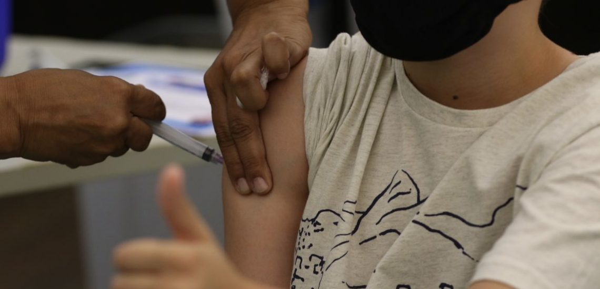
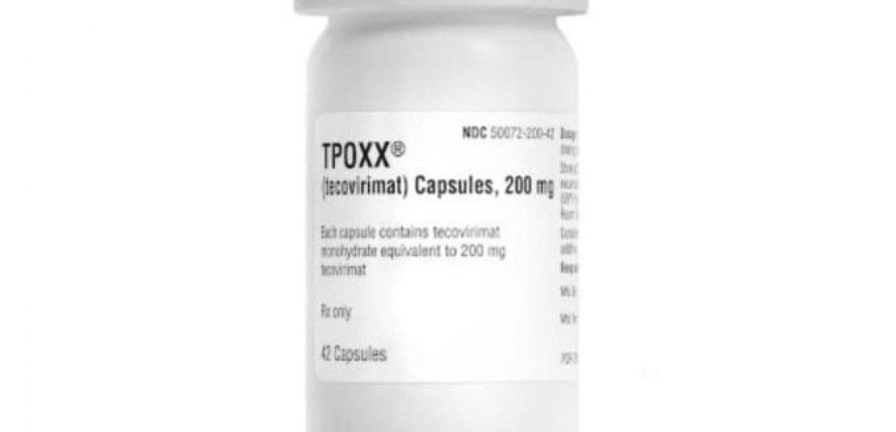

Vila Velha começa a semana com vacinação noturna. Confira os locais

A população que não consegue tirar um tempo do dia para se vacinar contra a Covid-19,
sarampo e gripe agora pode ficar tranquilo, pois Vila velha vai abrir três dias de imunização noturna.
As aplicação vão acontecer neste segunda (1º), terça-feira (2) e quarta-feira (3), sem necessidade de agendamento,
das 17h às 20h. Os bairros atendidos serão Centro, Glória e Alecrim, respectivamente a cada dia.
Confira a agenda:
1º de agosto (segunda-feira):
Titanic
R. Sete de Setembro, 173 – Centro de Vila Velha
2 de agosto (terça-feira):
Quadra da MUG
R. Mourisco, s/n – Glória
3 de agosto (quarta-feira)
Escola Alecrim
R. Felicidade Siqueira, 826 – Alecrim
O que é o tecovirimat, remédio que o Brasil vai comprar para tratar pacientes com varíola do macaco

Após a primeira morte por varíola do macaco (monekeypox) no Brasil,
o ministro da Saúde, Marcelo Queiroga, anunciou que o país vai comprar um medicamento que pode ser usado em pacientes
com risco de evoluir para quadros graves.
O princípio ativo tecovirimat (nome comercial Tpoxx),
foi aprovado pela FDA (Administração de Medicamentos e Alimentos) dos Estados Unidos
em 2018 para tratamento de varíola humana, doença que, embora erradicada em todo o mundo,
permanece como ameaça de ser usada como arma biológica.